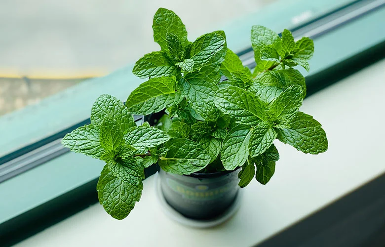

🌱 Conhecendo os temperos!
Manjericão, hortelã, salsinha... Os temperos são plantas que usamos para dar sabor e cheiro à comida. Muitos podem ser cultivados em casa!

🌱 O que os temperos gostam?
Antes de conhecer melhor essas plantas, descubra duas coisas importantes para cuidar delas:
Luz
Muitos temperos gostam de bastante luz do dia. Um lugar bem claro costuma ajudar o crescimento.
Água
Muitos gostam de solo levemente úmido, sem encharcar. Observe a terra antes de regar.
Importante: para usar os temperos na comida, peça sempre a ajuda de um adulto. Lave bem as folhas antes de comer!
🌱 O que torna um tempero especial?
Os temperos têm cheiros e sabores marcantes. Isso vem de substâncias que a própria planta produz, e que ajudam a planta a se proteger.
Têm cheiro forte
Muitos temperos têm óleos aromáticos nas folhas. Ao tocar nelas, o cheiro se espalha.
Dão sabor à comida
As folhas, e às vezes as flores ou sementes, são usadas nas receitas.
Crescem mais com a colheita
Em muitos temperos, colher as pontinhas com cuidado estimula a planta a brotar mais.
🔎 Detetive dos temperos!
Toque nos tópicos para descobrir mais sobre essas plantas.
👃 Por que têm cheiro forte?
Muitos produzem óleos aromáticos nas folhas, que dão cheiro e sabor e ajudam a planta a se proteger.
✂️ Como colher sem machucar a planta?
Com ajuda de um adulto, colha folhas ou pontinhas, sem arrancar a planta inteira. Em muitos temperos, isso estimula novos brotos.
🌸 O que fazer se o tempero florir?
Em alguns temperos, como o manjericão, as folhas podem mudar de sabor quando a planta floresce. Muitas pessoas retiram as flores para a planta continuar produzindo folhas.
🧼 Por que lavar antes de comer?
As folhas podem ter poeira ou sujeira. Lave bem em água corrente antes de usar na cozinha.
🪴 Como cuidar dos temperos?
Os temperos são ótimos para quem está começando a cultivar plantas.
Escolha um lugar claro
Muitos temperos gostam de bastante luz do dia. Janelas e varandas bem iluminadas costumam ser boas.
Mantenha o solo levemente úmido
Observe a terra antes de regar e evite água parada. Cada tempero tem sua preferência.
Colha com cuidado
Com ajuda de um adulto, colha só o que precisar e deixe o resto da planta crescer.
Lave antes de comer
Sempre lave bem as folhas e peça ajuda a um adulto. Nunca coloque uma planta na boca sem saber qual é.
🧠 E agora, pequeno jardineiro?
Imagine que você plantou manjericão e ele cresceu bem. Agora ele está cheio de folhas, e você quer usar um pouco na comida. Como fazer isso do jeito certo?
Qual é o melhor caminho?
Descobrir a resposta
💡 Peça ajuda a um adulto, colha só algumas folhas ou pontinhas e lave bem antes de usar.
Deixar folhas na planta ajuda ela a continuar crescendo.
💡 Você sabia?
Muitos temperos são parentes! A hortelã, o manjericão e o alecrim fazem parte de uma mesma grande família de plantas aromáticas.
E o Meu PlantAmigo?
O Meu PlantAmigo acompanha a umidade do solo para ajudar você a saber quando regar. Para temperos, isso é útil: eles costumam gostar de solo levemente úmido. Mas lembre-se de que cada tempero tem suas preferências.
🌱 Você virou especialista em temperos!
Agora que você descobriu os segredos dessas plantas, teste seus conhecimentos no quiz.
Fazer o quiz